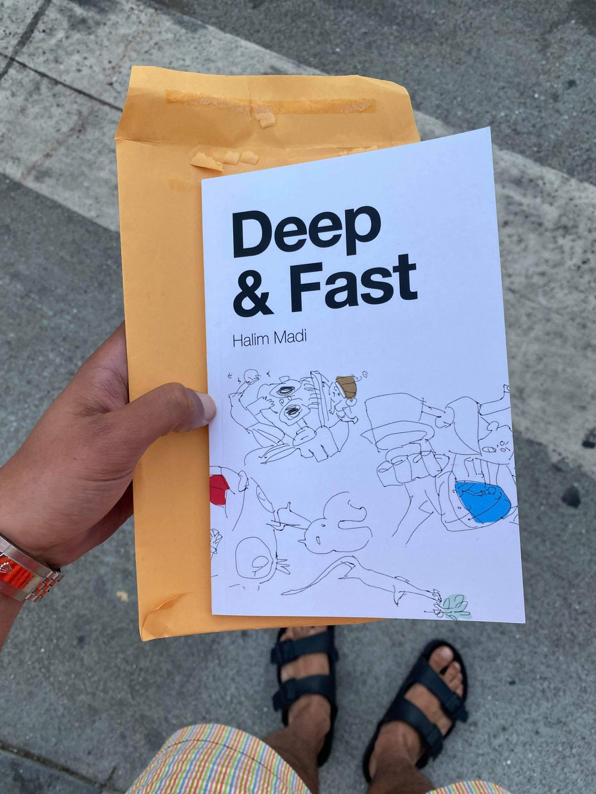
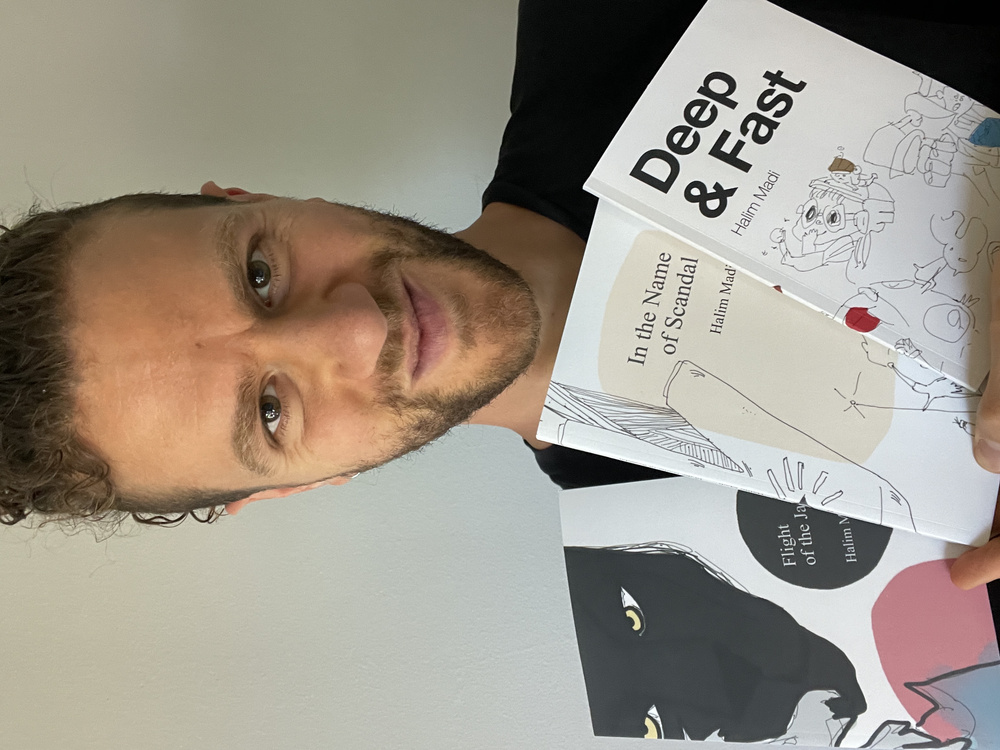

Deep & Fast
Deep & Fast is a book of found poetry. Every poem answers a question scraped from the internet: "Do we have guardian angels?", "Can certain exercises lead to better sex?". What emerges is a field guide for emotional survival. Less a book of answers than a slow undoing of the questions themselves. A poetic interruption in the flood of search, content, and self-help.

